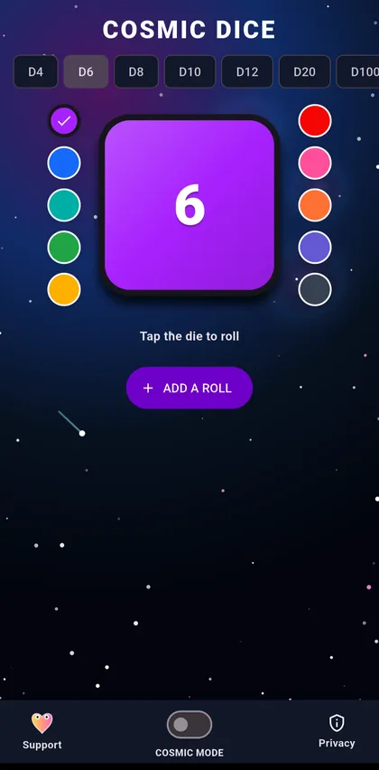
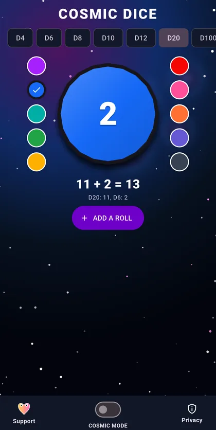
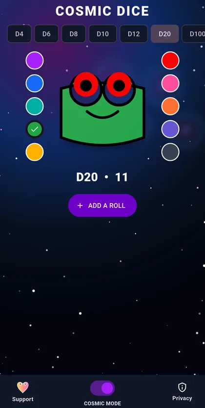

Android · APK download listed
Cosmic Dice
A clean digital dice roller with mixed-die totals and just enough cosmic drama.
View APK download & installation ↓ Privacy & permissions ↓Tap. Roll. Done.
- Standalone rollsTap the large die whenever you need one fast, fair result.
- Mixed-die chainsAdd different dice together for games that need more than a single roll.
- Cosmic ModeLet the established blinking cosmic frog tumble along with the same fair dice engine.
- Flexible layoutsDesigned for phones, tablets, portrait, landscape, split-screen, and larger text.
Why this one? Mix dice types when you need them; leave the account, ads and clutter out.
A look inside Cosmic Dice
Choose your die, add different rolls together, and catch just a glimpse of the cosmic frog.



Direct Android download
Get Cosmic Dice
Free, always. No ads, subscriptions, or paid unlocks.
Only public releases published by Frogdadday appear here.
Published APK record · v1.0.0 · October 22, 2026
What this build offers: Single and mixed-dice rolls without sign-ins or subscriptions. This is a feature summary, not a claim about what changed since the previous version.
- APK SHA-256
6dff950fc47d89348cec1255147d9d856a43f916f55c03910db292d2b697d2a7- Signing-certificate SHA-256 fingerprint
02:9E:D1:F6:96:A2:36:45:89:BC:03:81:35:1C:A9:B9:12:23:D4:41:F7:89:45:B9:6E:B8:1E:FF:96:FB:0F:8F
These identifiers were extracted from the public APK and its hash checked against GitHub's published digest on October 26, 2026. A matching checksum helps detect file changes, but is not a malware audit, independent security review or cryptographic signature-validation report. The certificate for a newer version may differ.
Browse official Frogdadday GitHub Releases ↗ if the live download check does not load.
Installing an APK on Android
- Use the download button above when a public APK is available, or open the official Releases page linked above.
- Open the file. Android may ask permission to install apps from your browser or file manager.
- Review system warnings; proceed only when you trust the source. Turn off the extra installation permission afterward.
Website APKs do not receive Google Play automatic updates. Updating an installed app requires a compatible Android package and signing certificate.
This page checks whether a public APK exists; it does not independently verify the file's safety or signing certificate.
No account at the table.
No ads, subscriptions, tracking, accounts, or unnecessary permissions. Check the section above for current APK availability.
Privacy & permissions
Dice rolls run locally without an account or tracking. The policy describes permissions, temporary selections, and optional external support.
Read the full privacy policy